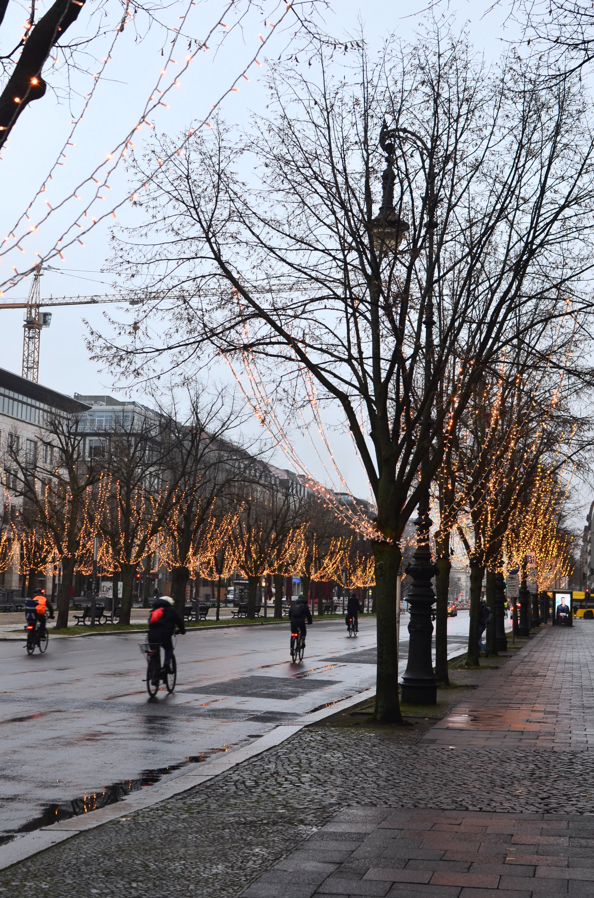
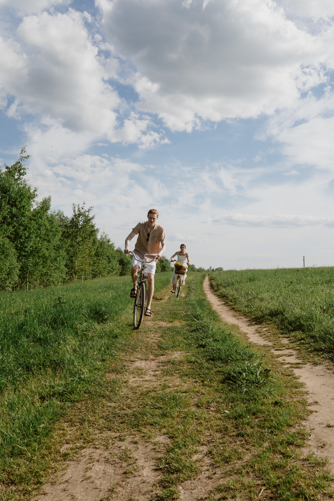
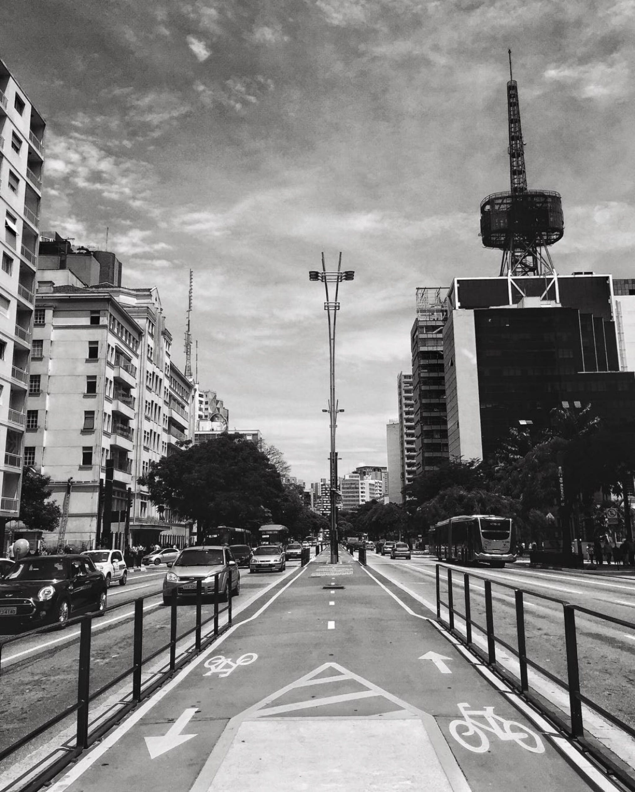
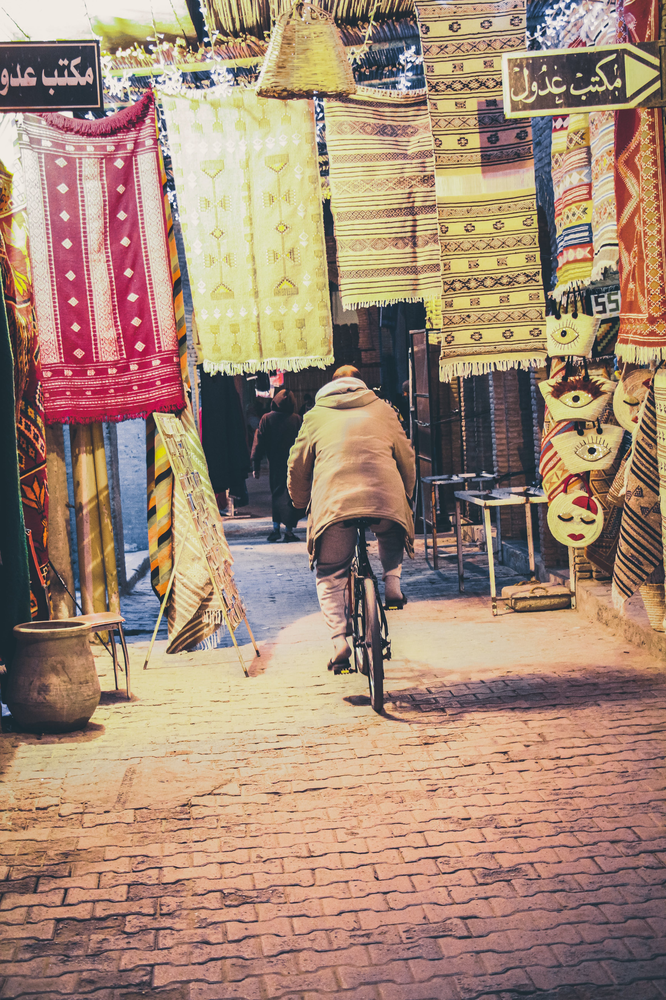
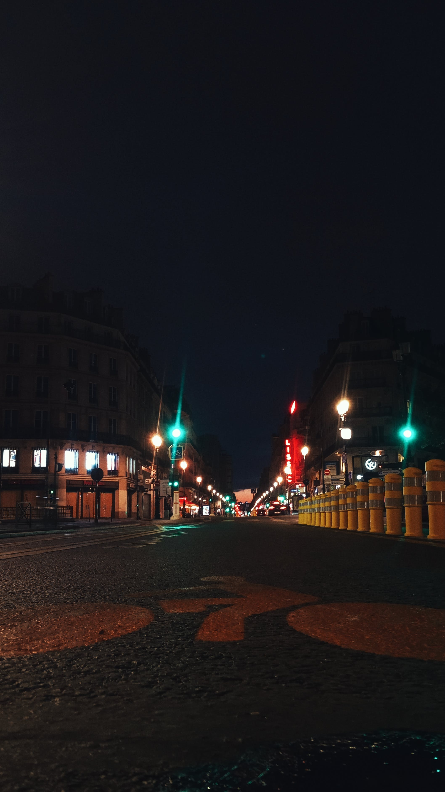
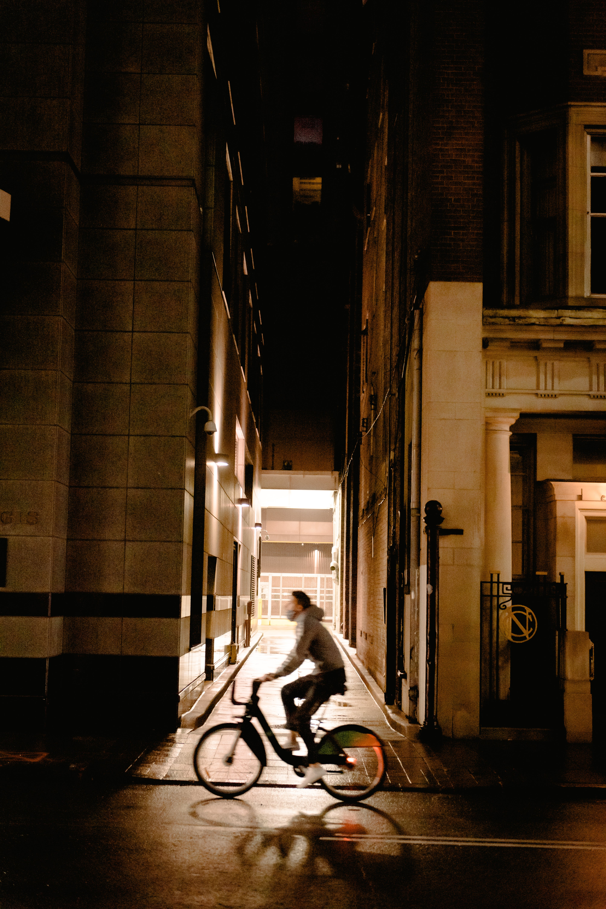

H2 Title






Welcome to our Bicycle Routes in Los Angeles section, your gateway to the dynamic and diverse cycling landscape of the City of Angels. Immerse yourself in the vibrant blend of urban exploration and scenic beauty as we guide you through a curated selection of bike routes across Los Angeles. Whether you seek the sun-soaked coastal trails, the energy of bustling city streets, or the tranquility of parks and greenways, our guides offer detailed insights into the best routes, highlighting key landmarks and cycling-friendly spots. Unleash the adventurer in you and pedal through the iconic landscapes of Los Angeles with confidence and excitement.